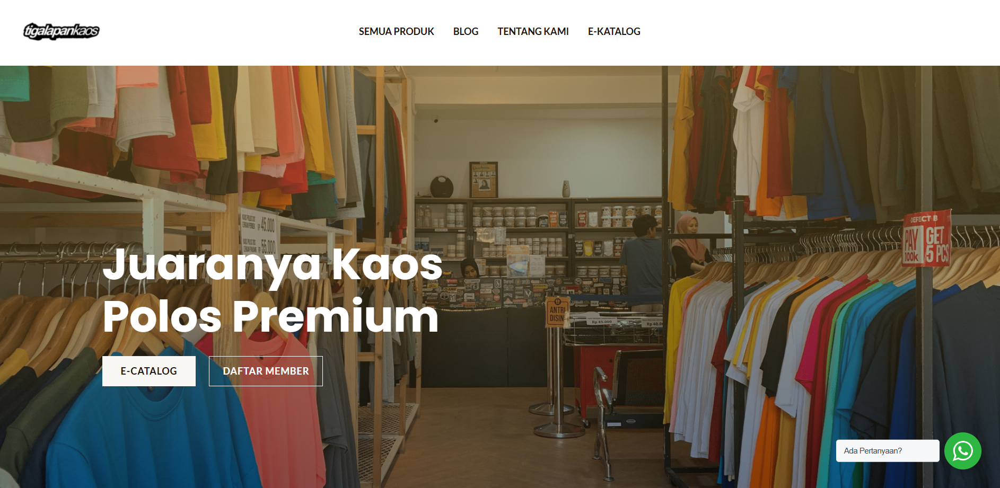

Gloditek

GLODITEK adalah lembaga pendidikan alternatif berbasis digital dan teknologi yang hadir untuk memberikan akses mudah menempuh perkuliahan pada perguruan-perguruan tinggi terbaik dalam dan luar negeri. GLODITEK juga menyediakan akses mudah menguasai dunia digital, keterampilan alternatif dalam menghadapi digitalisasi global yang semakin canggih. Dengan dukungan tenaga pendidik dan mentor yang profesional dari kalangan praktisi, GLODITEK menjadi lembaga untuk membekali generasi z dan milenial serta masyrakat dalam menempuh dunia pendidikan dan dunia kerja yang semakin menantang.
Tigalapankaos
Tigalapankaos merupakan penyedia kaos polos (nonbranding ) yang berdiri sejak 2018. Tigalapankaos ingin tumbuh dan berkembang bersama rekanan, dengan menawarkan harga yang kompetitif, stok yang dapat diandalkan, dan kualitas terjamin